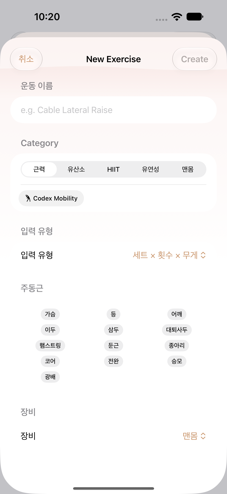
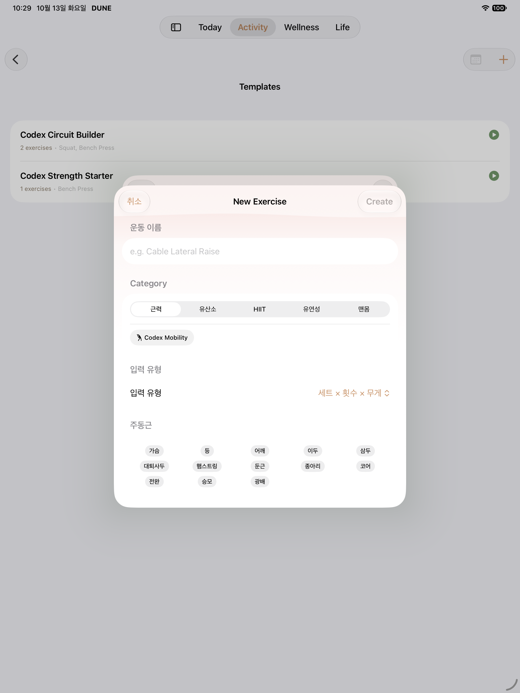
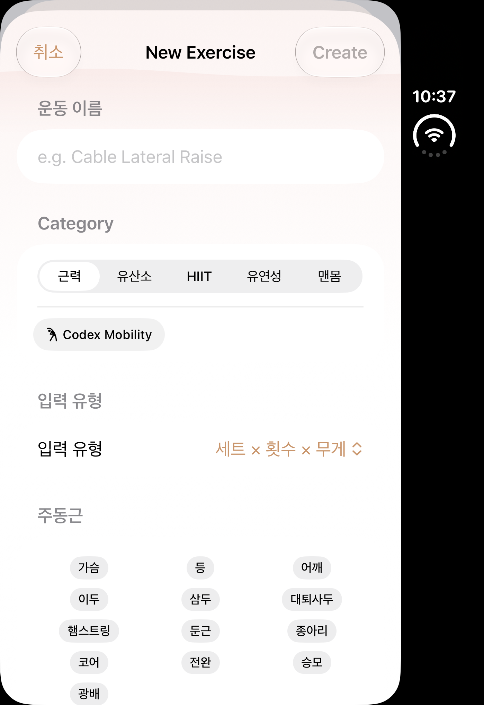
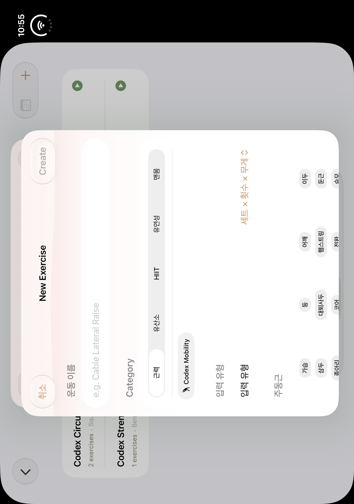
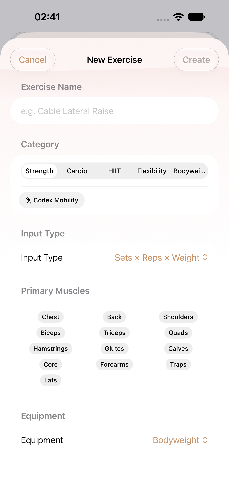
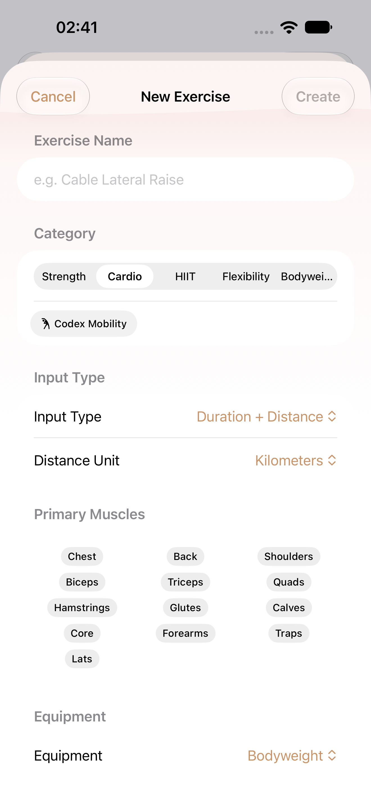
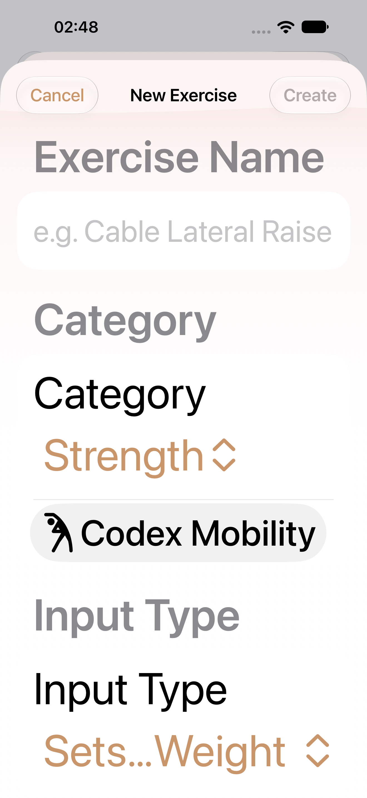
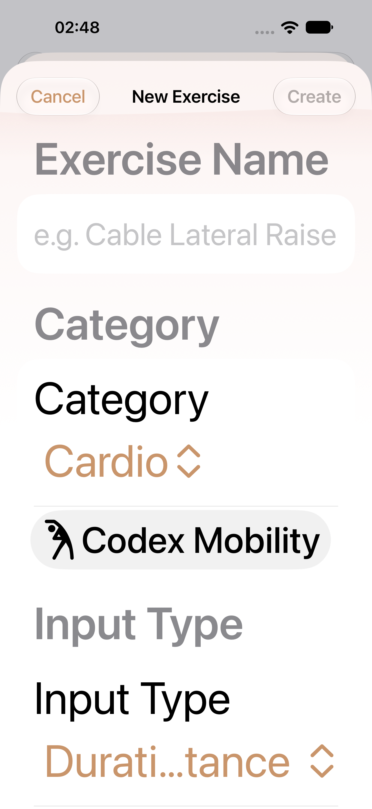
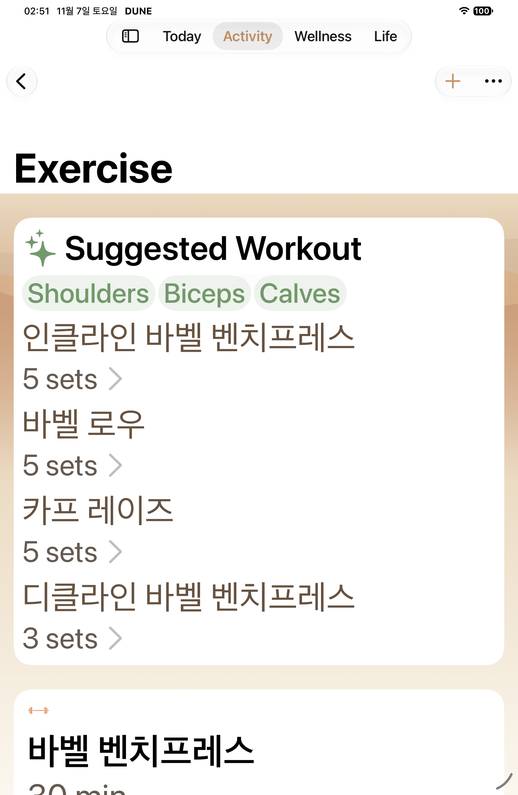
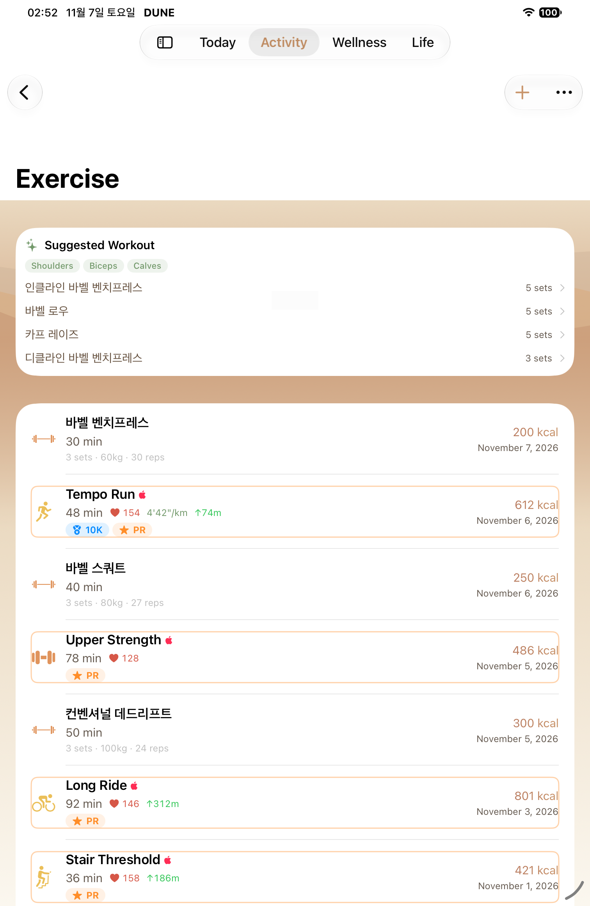

W04 · HELD draft · B09 native gallery
Native PNG/AX pairs are classified by completed selector receipts. Historical captures and failure diagnostics are separate. See manifest for source revisions and limits.
Pending or limited- phone W04 MAX custom exercise form: named PNG/AX pair absent
- phone W04 MAX Cardio category readback: named PNG/AX pair absent
- phone-retry1 W04 normal custom exercise form: named PNG/AX pair absent
- phone-retry1 W04 normal Cardio category readback: named PNG/AX pair absent
- ipad W04 normal custom exercise form: named PNG/AX pair absent
- ipad W04 normal Cardio category readback: named PNG/AX pair absent
- ipad W04 MAX custom exercise form: named PNG/AX pair absent
- ipad W04 MAX Cardio category readback: named PNG/AX pair absent
- ipad-retry1 W04 normal custom exercise form: named PNG/AX pair absent
- ipad-retry1 W04 normal Cardio category readback: named PNG/AX pair absent
- ipad-retry1 W04 MAX custom exercise form: named PNG/AX pair absent
- ipad-retry1 W04 MAX Cardio category readback: named PNG/AX pair absent
- Duo closed/open current-source capture absent: owned device migration failed before SDK; historical baselines only
- Before-teardown failure attachments never count as passed W01-W04 evidence
- W04 HELD: both iPad attempts failed before W04; two failures retained, no third SDK permitted. Official W04 actual rows remain unchanged.

regular · historical
W04 historical baseline

ipad · historical
W04 historical baseline

duo · historical
W04 historical baseline

duo-open · historical
W04 historical baseline

regular · after
Custom exercise form
AX tree
regular · after
Cardio category readback
AX tree
regular · after
MAX custom exercise form
AX tree
regular · after
MAX Cardio category readback
AX tree
ipad · diagnostic
ipad MAX: stopped before W04 at Templates route
AX tree
ipad · diagnostic
ipad normal: stopped before W04 at Templates route
AX treeipad · diagnostic
ipad-retry1 MAX: stopped before W04 at Templates route
AX treeipad · diagnostic
ipad-retry1 normal: stopped before W04 at Templates route
AX tree